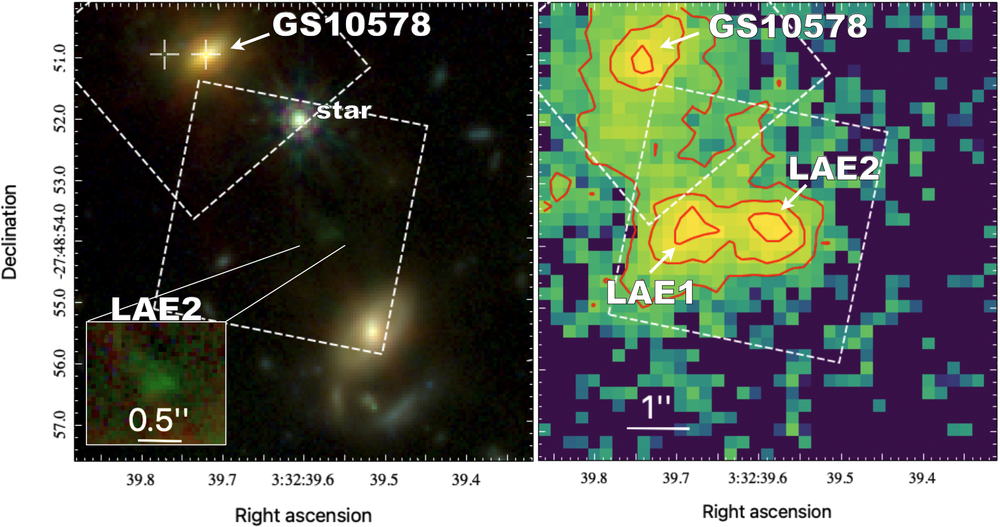

Research Output
First-Author Publications
-
Abundant hydrocarbons in a buried galactic nucleus with signs of carbonaceous grain and polycyclic aromatic hydrocarbon processing
García-Bernete I., Pereira-Santaella M., González-Alfonso E., et al., 2026, Nature Astronomy, 10, 420G -
GA-NIFS: AGN activity in a Lyα emitter within a triple-AGN system anchored by a passive galaxy at z = 3
Perna M., Arribas S., Hamed M., et al., 2026, A&A, 710, A167
Awarded Observing time
-
Yebes-RT40 - 2025
Tracing the organic complexity in buried nuclei: An extragalactic molecular inventory.
PI: García-Bernete I. (ID: 25B044; ~60 hours) -
ALMA + JWST Cycle 12
Probing cold gas, dust, and stars to solve the quenching puzzle in Jekyll and Hyde.
PI: Perna M. (ID: 2025.1.01246.S; ~30 hours) -
NOEMA - Summer 2026
The cold molecular gas content of dual AGN.
PIs: Lamperti I., Perna M. (ID: S26CC; ~45 hours)
Brief description of each publication
-
GA-NIFS: AGN activity in a Lyα emitter within a triple-AGN system anchored by a passive galaxy at z = 3
Perna M., Arribas S., Hamed M., et al., 2026, A&A, 710, A167
Previous JWST GA-NIFS observations had uncovered a remarkable environment around GS10578, one of the earliest known massive quenched galaxies, revealing an AGN at its centre and a second actively accreting black hole in a satellite only a few kiloparsecs away (D’Eugenio et al. 2024, Perna et al. 2025, Scholtz et al. 2026). In this work, using new JWST/NIRSpec IFU and VLT/MUSE observations, we explored its wider environment and confirmed that a nearby Lyα-emitting satellite also hosts an actively growing supermassive black hole, establishing the presence of a rare triple-AGN system within a region only a few tens of kiloparsecs across. We also investigated a second Lyα source that remains undetected in deep imaging and spectroscopy, finding evidence that its emission is powered by radiation from the neighbouring AGN rather than by its own stars. These results reveal that massive quenched galaxies can reside in surprisingly dynamic and gas-rich environments, where black-hole growth, feedback, and satellite interactions continue to shape galaxy evolution long after star formation has ceased.

Environmental context of GS10578 and its close emitters. Left: NIRCam three-colour composite image; Right: VLT/MUSE narrow-band image obtained by integrating over the Lyα line